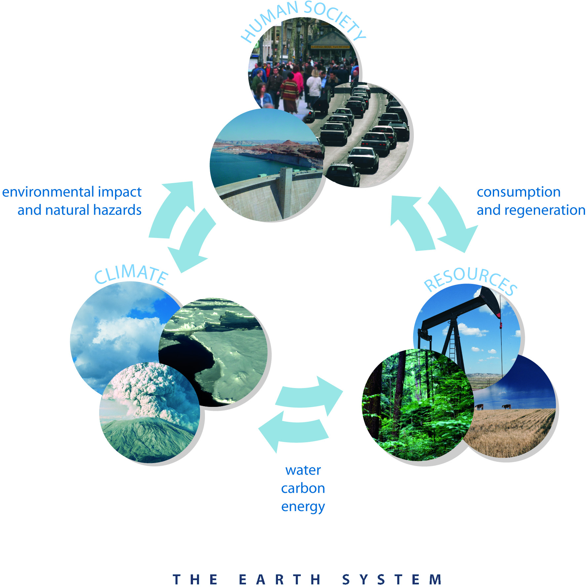
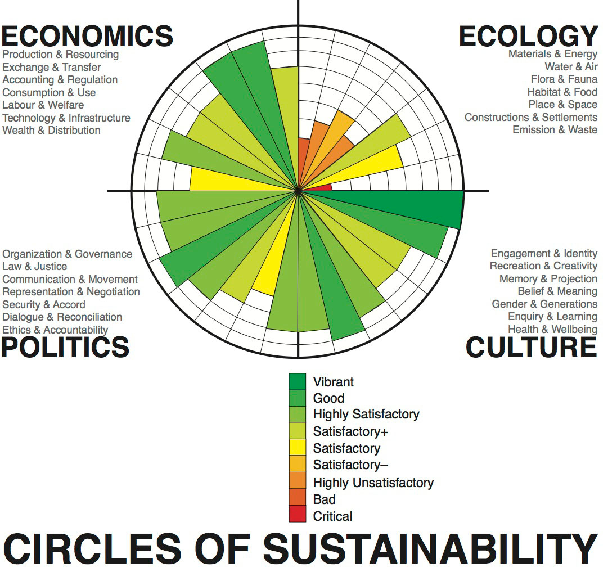
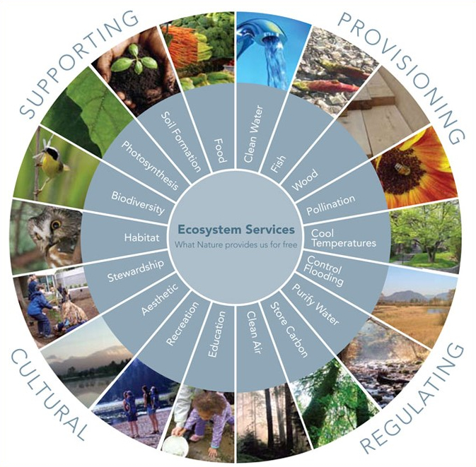

About Author
As the Geospatial Services Branch Head for the
N.C. Forest Service (NCFS), I serve as the lead GIS technical specialist and agency GIS coordinator.
The GIS Coordinator is responsible for establishing standards for metadata, data collection, storage, and analysis;
training more than 250 desktop GIS users; designing, developing, and managing web mapping applications; supporting GIS
analysis needs across all NCFS program areas; supervising GIS analysts; and writing and managing grant projects.
Much of my career has been focused on the use of geographic information systems/science and technology (GIST) to help
address conservation and sustainable management of Earth's natural resources to meet societal and ecological needs. Disciplines
related to understanding Earth systems and how human activities alter natural processes, and in turn how societies
are impacted by human-induced and naturally occurring changes on Earth, represent my primary interests.
Interests
-

"The objective of Earth System Science is to understand how the Earth is changing and the consequences for
life on Earth with a focus on enabling prediction and mitigation of undesirable consequences."
-

"Sustainable development recognizes that growth must be both inclusive and environmentally sound to reduce poverty and build shared prosperity for today’s population and to continue to meet the needs of future generations. It must be efficient with resources and carefully planned to deliver immediate and long-term benefits for people, planet, and prosperity."
-

"Ecosystem services are commonly defined as the benefits people obtain from ecosystems. Ecosystem services include basic services - provisioning services like the delivery of food, fresh water, wood and fiber, and medicine - and services that are less tangible and harder to measure but equally critical: regulating services like carbon sequestration, erosion control, and pollination; cultural services like recreation, ecotourism, and educational and spiritual values; and supporting services like nutrient cycling, soil formation, and primary productivity."
-

"Geographic Information Science & Technology (GIS&T) can be broken into three sub-domains:
1) Geographic Information Science (GIScience) is a multidisciplinary research enterprise that addresses the nature of geographic information and the application of geospatial technologies to basic scientific questions (Goodchild, 1992). Based primarily in the discipline of geography, but drawing upon insights and methods from philosophy, psychology, mathematics, statistics, computer science, landscape architecture, and other fields, GIScientists produced much of the knowledge represented in the ten knowledge areas that comprise the Body of Knowledge.
2) Geospatial Technology is the specialized set of information technologies that handle georeferenced data. Geospatial technologies support a wide variety of uses, from data acquisition (e.g., aerial imaging, remote sensing, land surveying, and global navigation satellite systems), to data storage and manipulation (e.g., GIS, image processing, and database management software), to data analysis (e.g., software for statistical analysis and modeling) to display and output (e.g., geovisualization software and imaging devices). GIScience and applications inform the development of geospatial technologies, but technology development requires contributions from information science and engineering.
3) Applications of GIS&T, includes the increasingly diverse uses of geospatial technology in government, industry, and academia. A few examples include near real-time analysis of service outages in electrical networks, applications in military intelligence and operations, homeland defense planning and operations, facilities siting, environmental impact assessment, property tax and land ownership records management, and truck route optimization for solid waste pickup in urban areas.
"